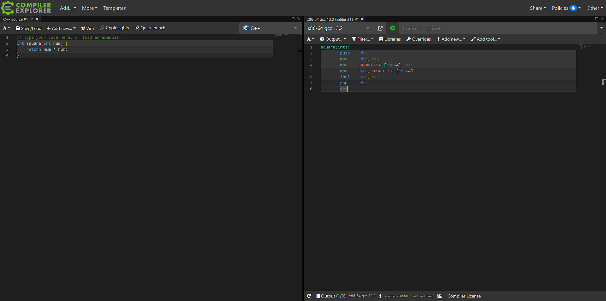
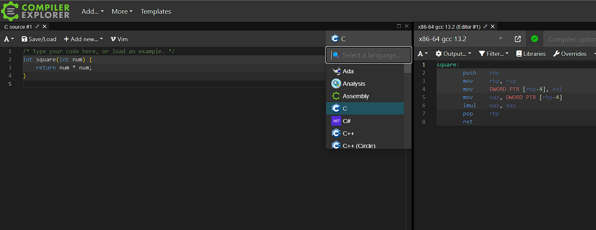
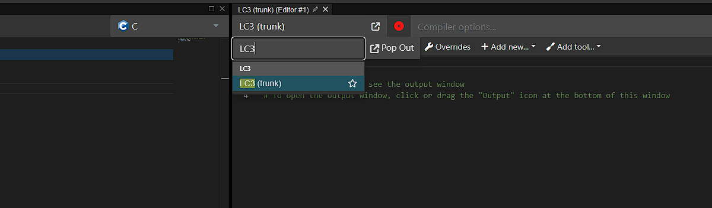
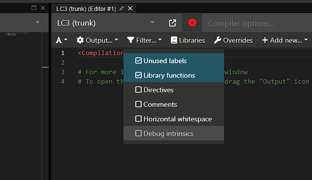
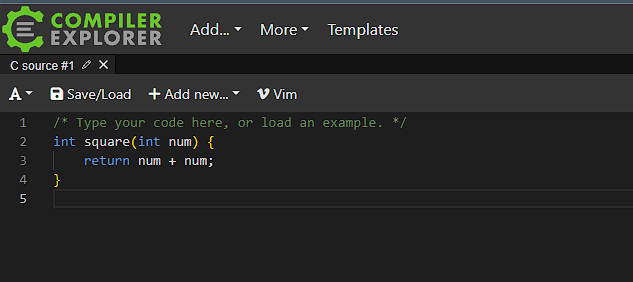

Introduction
This page is targeted towards students taking ECE 220, Computer Systems & Programming at the University of Illinois. It provides a brief explanation of the website Compiler Explorer and the LC3 compiler.
Compiler Explorer - Walkthrough
compiler explorer (main page)Compiler Explorer (CE) is a neat website that can become an extremely valuable tool for students. The main feature is that it lets one see a side-by-side comparison of code in some language (C for our purposes), and its compiled assembly version (LC3 in our case). In order to setup the site for use with ECE 220, follow the steps below:
Step 1. Open the link above, you should see a page like this: 
Step 2. Open the langauges menu that says 'c++', and select 'C' instead. 
Step 3. Open the compilers menu that says 'x86-64 gcc', and search and select 'LC3' 
Step 4. Open the 'Filter...' menu and disable the filters for Directives and Comments.
This allows useful comments, and also shows you initialization of static variables.

Step 5. Edit the C code into something that the current version of the lc3compiler can handle.
At the time of writing this, multiplication is unimplemented (this is being fixed soon!).
Simply changing the '*' into a '+' will do for now.

Step 6. If you make an error in your C code, we have tried our best to provide helpful error messages. In order to see them, you have to open the 'output' menu located at the bottom of the LC3 assembly output.
Free free to play with different C programs, as that is the whole point of the site. Do keep in mind that there are various features that are unsupported, and the error messages don't always do the greatest job of letting you know that. If you find any errors in the assembly output or unexpected crashes feel free to let me know at <xrouth2@illinois.edu>. If you would like to inspect the soruce code (it is really messy), it is available here: github.com/xavierrouth/lc3-compiler.
LC3 Examples
Below are various examples of some of the main C concepts that you should know about when taking ECE 220.
linked listfibonacci
pass by pointer
simple functon call
Other Resoureces
Some other resources I found helpful when taking ECE 220
HKN wikiruntime stack explainer
Eventually the lc3compiler will emit optimized assembly like shown here [C to LC3 optimized], however it may take a while for that to be implemented.
browser lc3 simulatorClosing Thoughts
Keep this website in mind throughout your coursework at UIUC, especially for Computer Engineering majors. I personally have found CE very helpful for other classes (ECE 391, CS 426, CS 225, etc).